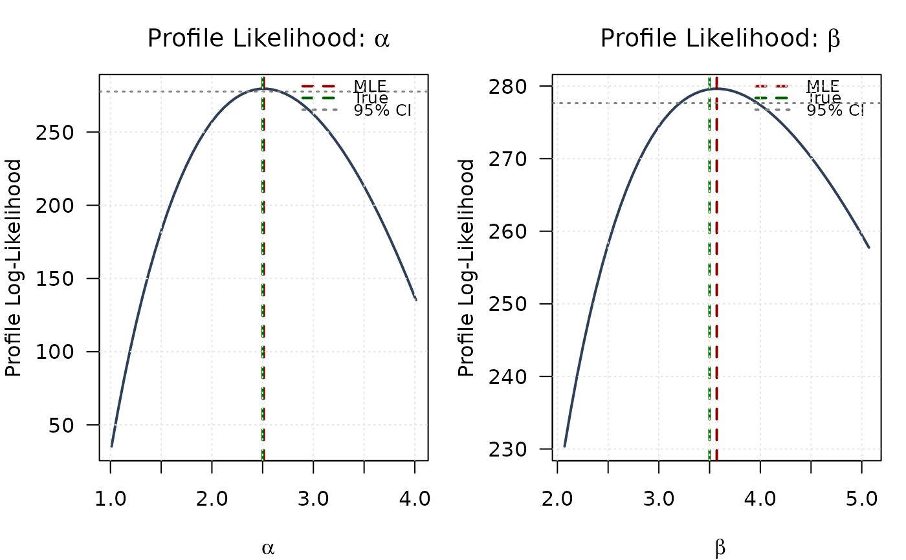
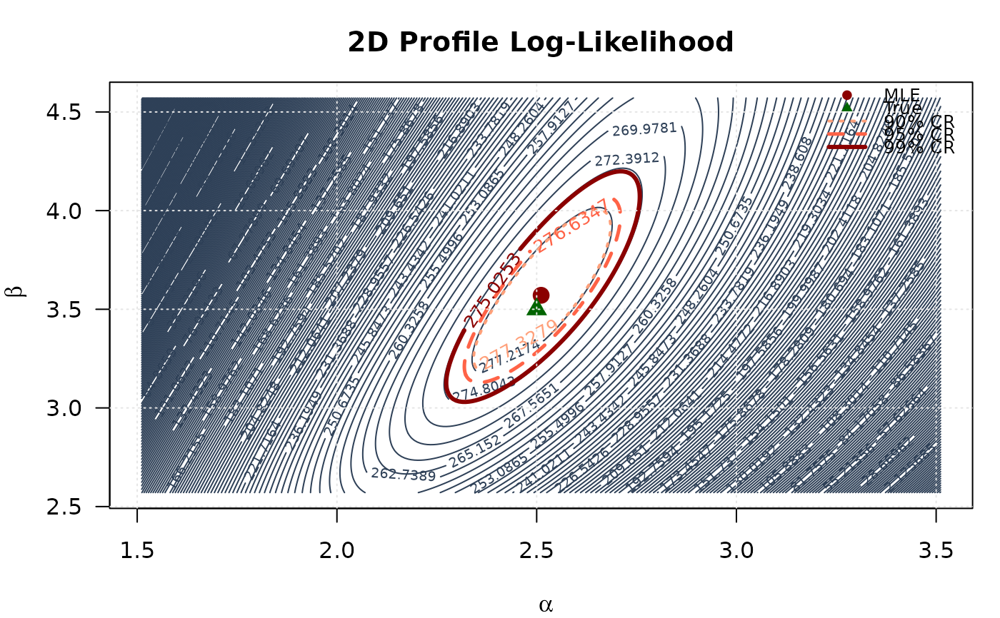
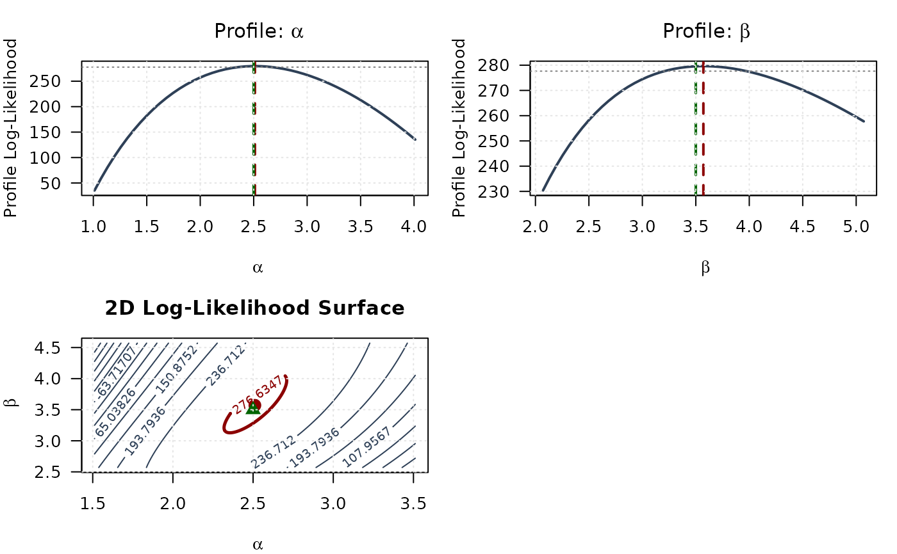
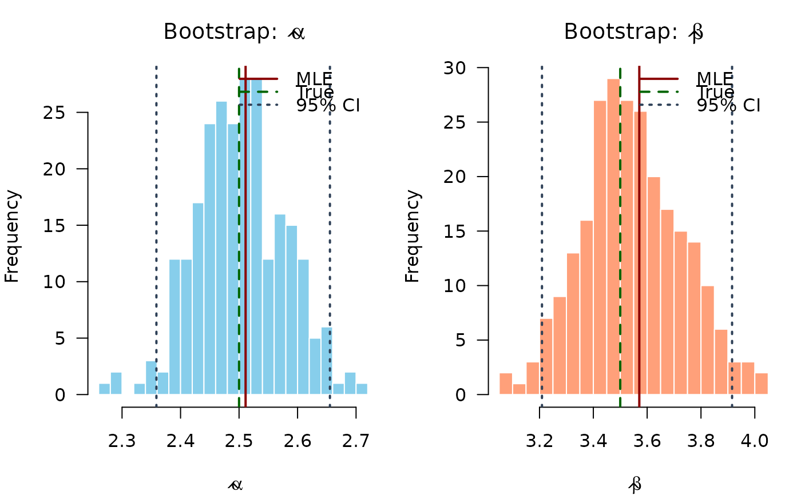
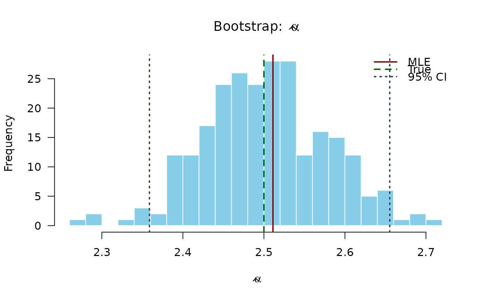
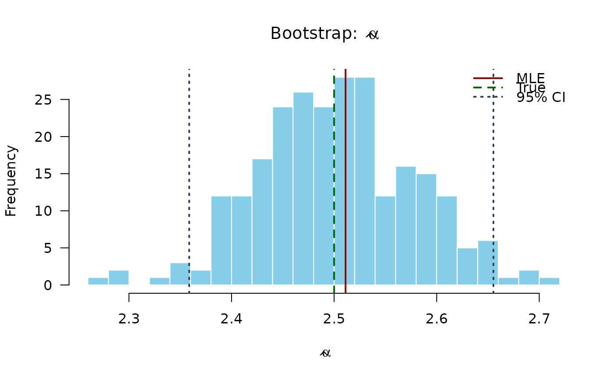

Computes the negative log-likelihood function for the two-parameter
Kumaraswamy (Kw) distribution with parameters alpha (\(\alpha\))
and beta (\(\beta\)), given a vector of observations. This function
is suitable for maximum likelihood estimation.
Value
Returns a single double value representing the negative
log-likelihood (\(-\ell(\theta|\mathbf{x})\)). Returns Inf
if any parameter values in par are invalid according to their
constraints, or if any value in data is not in the interval (0, 1).
Details
The Kumaraswamy (Kw) distribution's probability density function (PDF) is
(see dkw):
$$
f(x | \theta) = \alpha \beta x^{\alpha-1} (1 - x^\alpha)^{\beta-1}
$$
for \(0 < x < 1\) and \(\theta = (\alpha, \beta)\).
The log-likelihood function \(\ell(\theta | \mathbf{x})\) for a sample
\(\mathbf{x} = (x_1, \dots, x_n)\) is \(\sum_{i=1}^n \ln f(x_i | \theta)\):
$$
\ell(\theta | \mathbf{x}) = n[\ln(\alpha) + \ln(\beta)]
+ \sum_{i=1}^{n} [(\alpha-1)\ln(x_i) + (\beta-1)\ln(v_i)]
$$
where \(v_i = 1 - x_i^{\alpha}\).
This function computes and returns the negative log-likelihood, \(-\ell(\theta|\mathbf{x})\),
suitable for minimization using optimization routines like optim.
It is equivalent to the negative log-likelihood of the GKw distribution
(llgkw) evaluated at \(\gamma=1, \delta=0, \lambda=1\).
References
Kumaraswamy, P. (1980). A generalized probability density function for double-bounded random processes. Journal of Hydrology, 46(1-2), 79-88.
Jones, M. C. (2009). Kumaraswamy's distribution: A beta-type distribution with some tractability advantages. Statistical Methodology, 6(1), 70-81.
Examples
# \donttest{
## Example 1: Maximum Likelihood Estimation with Analytical Gradient
# Generate sample data
set.seed(123)
n <- 1000
true_params <- c(alpha = 2.5, beta = 3.5)
data <- rkw(n, alpha = true_params[1], beta = true_params[2])
# Optimization using BFGS with analytical gradient
fit <- optim(
par = c(2, 2),
fn = llkw,
gr = grkw,
data = data,
method = "BFGS",
hessian = TRUE
)
# Extract results
mle <- fit$par
names(mle) <- c("alpha", "beta")
se <- sqrt(diag(solve(fit$hessian)))
ci_lower <- mle - 1.96 * se
ci_upper <- mle + 1.96 * se
# Summary table
results <- data.frame(
Parameter = c("alpha", "beta"),
True = true_params,
MLE = mle,
SE = se,
CI_Lower = ci_lower,
CI_Upper = ci_upper
)
print(results, digits = 4)
#> Parameter True MLE SE CI_Lower CI_Upper
#> alpha alpha 2.5 2.511 0.07982 2.355 2.668
#> beta beta 3.5 3.571 0.19189 3.195 3.947
## Example 2: Verifying Gradient at MLE
# At MLE, gradient should be approximately zero
gradient_at_mle <- grkw(par = mle, data = data)
print(gradient_at_mle)
#> [1] 2.071782e-05 -1.146518e-05
cat("Max absolute score:", max(abs(gradient_at_mle)), "\n")
#> Max absolute score: 2.071782e-05
## Example 3: Checking Hessian Properties
# Hessian at MLE
hessian_at_mle <- hskw(par = mle, data = data)
print(hessian_at_mle, digits = 4)
#> [,1] [,2]
#> [1,] 453.2 -152.43
#> [2,] -152.4 78.43
# Check positive definiteness via eigenvalues
eigenvals <- eigen(hessian_at_mle, only.values = TRUE)$values
print(eigenvals)
#> [1] 507.36836 24.25944
all(eigenvals > 0)
#> [1] TRUE
# Condition number
cond_number <- max(eigenvals) / min(eigenvals)
cat("Condition number:", format(cond_number, scientific = TRUE), "\n")
#> Condition number: 2.091426e+01
## Example 4: Comparing Optimization Methods
methods <- c("BFGS", "L-BFGS-B", "Nelder-Mead", "CG")
start_params <- c(2, 2)
comparison <- data.frame(
Method = character(),
Alpha_Est = numeric(),
Beta_Est = numeric(),
NegLogLik = numeric(),
Convergence = integer(),
stringsAsFactors = FALSE
)
for (method in methods) {
if (method %in% c("BFGS", "CG")) {
fit_temp <- optim(
par = start_params,
fn = llkw,
gr = grkw,
data = data,
method = method
)
} else if (method == "L-BFGS-B") {
fit_temp <- optim(
par = start_params,
fn = llkw,
gr = grkw,
data = data,
method = method,
lower = c(0.01, 0.01),
upper = c(100, 100)
)
} else {
fit_temp <- optim(
par = start_params,
fn = llkw,
data = data,
method = method
)
}
comparison <- rbind(comparison, data.frame(
Method = method,
Alpha_Est = fit_temp$par[1],
Beta_Est = fit_temp$par[2],
NegLogLik = fit_temp$value,
Convergence = fit_temp$convergence,
stringsAsFactors = FALSE
))
}
print(comparison, digits = 4, row.names = FALSE)
#> Method Alpha_Est Beta_Est NegLogLik Convergence
#> BFGS 2.511 3.571 -279.6 0
#> L-BFGS-B 2.511 3.571 -279.6 0
#> Nelder-Mead 2.511 3.571 -279.6 0
#> CG 2.511 3.571 -279.6 0
## Example 5: Likelihood Ratio Test
# Test H0: beta = 3 vs H1: beta free
loglik_full <- -fit$value
# Restricted model: fix beta = 3
restricted_ll <- function(alpha, data, beta_fixed) {
llkw(par = c(alpha, beta_fixed), data = data)
}
fit_restricted <- optimize(
f = restricted_ll,
interval = c(0.1, 10),
data = data,
beta_fixed = 3,
maximum = FALSE
)
loglik_restricted <- -fit_restricted$objective
lr_stat <- 2 * (loglik_full - loglik_restricted)
p_value <- pchisq(lr_stat, df = 1, lower.tail = FALSE)
cat("LR Statistic:", round(lr_stat, 4), "\n")
#> LR Statistic: 10.3649
cat("P-value:", format.pval(p_value, digits = 4), "\n")
#> P-value: 0.001284
## Example 6: Univariate Profile Likelihoods
# Grid for alpha
alpha_grid <- seq(mle[1] - 1.5, mle[1] + 1.5, length.out = 50)
alpha_grid <- alpha_grid[alpha_grid > 0]
profile_ll_alpha <- numeric(length(alpha_grid))
for (i in seq_along(alpha_grid)) {
profile_fit <- optimize(
f = function(beta) llkw(c(alpha_grid[i], beta), data),
interval = c(0.1, 10),
maximum = FALSE
)
profile_ll_alpha[i] <- -profile_fit$objective
}
# Grid for beta
beta_grid <- seq(mle[2] - 1.5, mle[2] + 1.5, length.out = 50)
beta_grid <- beta_grid[beta_grid > 0]
profile_ll_beta <- numeric(length(beta_grid))
for (i in seq_along(beta_grid)) {
profile_fit <- optimize(
f = function(alpha) llkw(c(alpha, beta_grid[i]), data),
interval = c(0.1, 10),
maximum = FALSE
)
profile_ll_beta[i] <- -profile_fit$objective
}
# 95% confidence threshold
chi_crit <- qchisq(0.95, df = 1)
threshold <- max(profile_ll_alpha) - chi_crit / 2
# Plot
# Profile for alpha
plot(alpha_grid, profile_ll_alpha, type = "l", lwd = 2, col = "#2E4057",
xlab = expression(alpha), ylab = "Profile Log-Likelihood",
main = expression(paste("Profile Likelihood: ", alpha)), las = 1)
abline(v = mle[1], col = "#8B0000", lty = 2, lwd = 2)
abline(v = true_params[1], col = "#006400", lty = 2, lwd = 2)
abline(h = threshold, col = "#808080", lty = 3, lwd = 1.5)
legend("topright",
legend = c("MLE", "True", "95% CI"),
col = c("#8B0000", "#006400", "#808080"),
lty = c(2, 2, 3), lwd = 2, bty = "n", cex = 0.8)
grid(col = "gray90")

# Profile for beta
plot(beta_grid, profile_ll_beta, type = "l", lwd = 2, col = "#2E4057",
xlab = expression(beta), ylab = "Profile Log-Likelihood",
main = expression(paste("Profile Likelihood: ", beta)), las = 1)
abline(v = mle[2], col = "#8B0000", lty = 2, lwd = 2)
abline(v = true_params[2], col = "#006400", lty = 2, lwd = 2)
abline(h = threshold, col = "#808080", lty = 3, lwd = 1.5)
legend("topright",
legend = c("MLE", "True", "95% CI"),
col = c("#8B0000", "#006400", "#808080"),
lty = c(2, 2, 3), lwd = 2, bty = "n", cex = 0.8)
grid(col = "gray90")

## Example 7: 2D Profile Likelihood Surface
# Create 2D grid
alpha_2d <- seq(mle[1] - 1, mle[1] + 1, length.out = round(n/4))
beta_2d <- seq(mle[2] - 1, mle[2] + 1, length.out = round(n/4))
alpha_2d <- alpha_2d[alpha_2d > 0]
beta_2d <- beta_2d[beta_2d > 0]
# Compute log-likelihood surface
ll_surface <- matrix(NA, nrow = length(alpha_2d), ncol = length(beta_2d))
for (i in seq_along(alpha_2d)) {
for (j in seq_along(beta_2d)) {
ll_surface[i, j] <- -llkw(c(alpha_2d[i], beta_2d[j]), data)
}
}
# Confidence region levels
max_ll <- max(ll_surface, na.rm = TRUE)
levels_90 <- max_ll - qchisq(0.90, df = 2) / 2
levels_95 <- max_ll - qchisq(0.95, df = 2) / 2
levels_99 <- max_ll - qchisq(0.99, df = 2) / 2
# Plot contour
contour(alpha_2d, beta_2d, ll_surface,
xlab = expression(alpha), ylab = expression(beta),
main = "2D Profile Log-Likelihood",
levels = seq(min(ll_surface, na.rm = TRUE), max_ll, length.out = round(n/4)),
col = "#2E4057", las = 1, lwd = 1)
# Add confidence region contours
contour(alpha_2d, beta_2d, ll_surface,
levels = c(levels_90, levels_95, levels_99),
col = c("#FFA07A", "#FF6347", "#8B0000"),
lwd = c(2, 2.5, 3), lty = c(3, 2, 1),
add = TRUE, labcex = 0.8)
# Mark points
points(mle[1], mle[2], pch = 19, col = "#8B0000", cex = 1.5)
points(true_params[1], true_params[2], pch = 17, col = "#006400", cex = 1.5)
legend("topright",
legend = c("MLE", "True", "90% CR", "95% CR", "99% CR"),
col = c("#8B0000", "#006400", "#FFA07A", "#FF6347", "#8B0000"),
pch = c(19, 17, NA, NA, NA),
lty = c(NA, NA, 3, 2, 1),
lwd = c(NA, NA, 2, 2.5, 3),
bty = "n", cex = 0.8)
grid(col = "gray90")

## Example 8: Combined View - Profiles with 2D Surface
# Top left: Profile for alpha
plot(alpha_grid, profile_ll_alpha, type = "l", lwd = 2, col = "#2E4057",
xlab = expression(alpha), ylab = "Profile Log-Likelihood",
main = expression(paste("Profile: ", alpha)), las = 1)
abline(v = mle[1], col = "#8B0000", lty = 2, lwd = 2)
abline(v = true_params[1], col = "#006400", lty = 2, lwd = 2)
abline(h = threshold, col = "#808080", lty = 3)
grid(col = "gray90")

# Top right: Profile for beta
plot(beta_grid, profile_ll_beta, type = "l", lwd = 2, col = "#2E4057",
xlab = expression(beta), ylab = "Profile Log-Likelihood",
main = expression(paste("Profile: ", beta)), las = 1)
abline(v = mle[2], col = "#8B0000", lty = 2, lwd = 2)
abline(v = true_params[2], col = "#006400", lty = 2, lwd = 2)
abline(h = threshold, col = "#808080", lty = 3)
grid(col = "gray90")
 # Bottom left: 2D contour
contour(alpha_2d, beta_2d, ll_surface,
xlab = expression(alpha), ylab = expression(beta),
main = "2D Log-Likelihood Surface",
levels = seq(min(ll_surface, na.rm = TRUE), max_ll, length.out = 15),
col = "#2E4057", las = 1, lwd = 1)
contour(alpha_2d, beta_2d, ll_surface,
levels = c(levels_95),
col = "#8B0000", lwd = 2.5, add = TRUE)
points(mle[1], mle[2], pch = 19, col = "#8B0000", cex = 1.5)
points(true_params[1], true_params[2], pch = 17, col = "#006400", cex = 1.5)
grid(col = "gray90")
# Bottom left: 2D contour
contour(alpha_2d, beta_2d, ll_surface,
xlab = expression(alpha), ylab = expression(beta),
main = "2D Log-Likelihood Surface",
levels = seq(min(ll_surface, na.rm = TRUE), max_ll, length.out = 15),
col = "#2E4057", las = 1, lwd = 1)
contour(alpha_2d, beta_2d, ll_surface,
levels = c(levels_95),
col = "#8B0000", lwd = 2.5, add = TRUE)
points(mle[1], mle[2], pch = 19, col = "#8B0000", cex = 1.5)
points(true_params[1], true_params[2], pch = 17, col = "#006400", cex = 1.5)
grid(col = "gray90")
 ## Example 9: Numerical Gradient Verification
# Manual finite difference gradient
numerical_gradient <- function(f, x, data, h = 1e-7) {
grad <- numeric(length(x))
for (i in seq_along(x)) {
x_plus <- x_minus <- x
x_plus[i] <- x[i] + h
x_minus[i] <- x[i] - h
grad[i] <- (f(x_plus, data) - f(x_minus, data)) / (2 * h)
}
return(grad)
}
# Compare
grad_analytical <- grkw(par = mle, data = data)
grad_numerical <- numerical_gradient(llkw, mle, data)
comparison_grad <- data.frame(
Parameter = c("alpha", "beta"),
Analytical = grad_analytical,
Numerical = grad_numerical,
Difference = abs(grad_analytical - grad_numerical)
)
print(comparison_grad, digits = 8)
#> Parameter Analytical Numerical Difference
#> 1 alpha 2.0717825e-05 2.1600499e-05 8.8267439e-07
#> 2 beta -1.1465180e-05 -1.0800250e-05 6.6493050e-07
## Example 10: Bootstrap Confidence Intervals
n_boot <- round(n/4)
boot_estimates <- matrix(NA, nrow = n_boot, ncol = 2)
set.seed(456)
for (b in 1:n_boot) {
boot_data <- rkw(n, alpha = mle[1], beta = mle[2])
boot_fit <- optim(
par = mle,
fn = llkw,
gr = grkw,
data = boot_data,
method = "BFGS",
control = list(maxit = 500)
)
if (boot_fit$convergence == 0) {
boot_estimates[b, ] <- boot_fit$par
}
}
boot_estimates <- boot_estimates[complete.cases(boot_estimates), ]
boot_ci <- apply(boot_estimates, 2, quantile, probs = c(0.025, 0.975))
colnames(boot_ci) <- c("alpha", "beta")
print(t(boot_ci), digits = 4)
#> 2.5% 97.5%
#> alpha 2.359 2.655
#> beta 3.209 3.916
# Plot bootstrap distributions
hist(boot_estimates[, 1], breaks = 20, col = "#87CEEB", border = "white",
main = expression(paste("Bootstrap: ", hat(alpha))),
xlab = expression(hat(alpha)), las = 1)
abline(v = mle[1], col = "#8B0000", lwd = 2)
abline(v = true_params[1], col = "#006400", lwd = 2, lty = 2)
abline(v = boot_ci[, 1], col = "#2E4057", lwd = 2, lty = 3)
legend("topright", legend = c("MLE", "True", "95% CI"),
col = c("#8B0000", "#006400", "#2E4057"),
lwd = 2, lty = c(1, 2, 3), bty = "n")

hist(boot_estimates[, 2], breaks = 20, col = "#FFA07A", border = "white",
main = expression(paste("Bootstrap: ", hat(beta))),
xlab = expression(hat(beta)), las = 1)
abline(v = mle[2], col = "#8B0000", lwd = 2)
abline(v = true_params[2], col = "#006400", lwd = 2, lty = 2)
abline(v = boot_ci[, 2], col = "#2E4057", lwd = 2, lty = 3)
legend("topright", legend = c("MLE", "True", "95% CI"),
col = c("#8B0000", "#006400", "#2E4057"),
lwd = 2, lty = c(1, 2, 3), bty = "n")
## Example 9: Numerical Gradient Verification
# Manual finite difference gradient
numerical_gradient <- function(f, x, data, h = 1e-7) {
grad <- numeric(length(x))
for (i in seq_along(x)) {
x_plus <- x_minus <- x
x_plus[i] <- x[i] + h
x_minus[i] <- x[i] - h
grad[i] <- (f(x_plus, data) - f(x_minus, data)) / (2 * h)
}
return(grad)
}
# Compare
grad_analytical <- grkw(par = mle, data = data)
grad_numerical <- numerical_gradient(llkw, mle, data)
comparison_grad <- data.frame(
Parameter = c("alpha", "beta"),
Analytical = grad_analytical,
Numerical = grad_numerical,
Difference = abs(grad_analytical - grad_numerical)
)
print(comparison_grad, digits = 8)
#> Parameter Analytical Numerical Difference
#> 1 alpha 2.0717825e-05 2.1600499e-05 8.8267439e-07
#> 2 beta -1.1465180e-05 -1.0800250e-05 6.6493050e-07
## Example 10: Bootstrap Confidence Intervals
n_boot <- round(n/4)
boot_estimates <- matrix(NA, nrow = n_boot, ncol = 2)
set.seed(456)
for (b in 1:n_boot) {
boot_data <- rkw(n, alpha = mle[1], beta = mle[2])
boot_fit <- optim(
par = mle,
fn = llkw,
gr = grkw,
data = boot_data,
method = "BFGS",
control = list(maxit = 500)
)
if (boot_fit$convergence == 0) {
boot_estimates[b, ] <- boot_fit$par
}
}
boot_estimates <- boot_estimates[complete.cases(boot_estimates), ]
boot_ci <- apply(boot_estimates, 2, quantile, probs = c(0.025, 0.975))
colnames(boot_ci) <- c("alpha", "beta")
print(t(boot_ci), digits = 4)
#> 2.5% 97.5%
#> alpha 2.359 2.655
#> beta 3.209 3.916
# Plot bootstrap distributions
hist(boot_estimates[, 1], breaks = 20, col = "#87CEEB", border = "white",
main = expression(paste("Bootstrap: ", hat(alpha))),
xlab = expression(hat(alpha)), las = 1)
abline(v = mle[1], col = "#8B0000", lwd = 2)
abline(v = true_params[1], col = "#006400", lwd = 2, lty = 2)
abline(v = boot_ci[, 1], col = "#2E4057", lwd = 2, lty = 3)
legend("topright", legend = c("MLE", "True", "95% CI"),
col = c("#8B0000", "#006400", "#2E4057"),
lwd = 2, lty = c(1, 2, 3), bty = "n")

hist(boot_estimates[, 2], breaks = 20, col = "#FFA07A", border = "white",
main = expression(paste("Bootstrap: ", hat(beta))),
xlab = expression(hat(beta)), las = 1)
abline(v = mle[2], col = "#8B0000", lwd = 2)
abline(v = true_params[2], col = "#006400", lwd = 2, lty = 2)
abline(v = boot_ci[, 2], col = "#2E4057", lwd = 2, lty = 3)
legend("topright", legend = c("MLE", "True", "95% CI"),
col = c("#8B0000", "#006400", "#2E4057"),
lwd = 2, lty = c(1, 2, 3), bty = "n")
 # }
# }